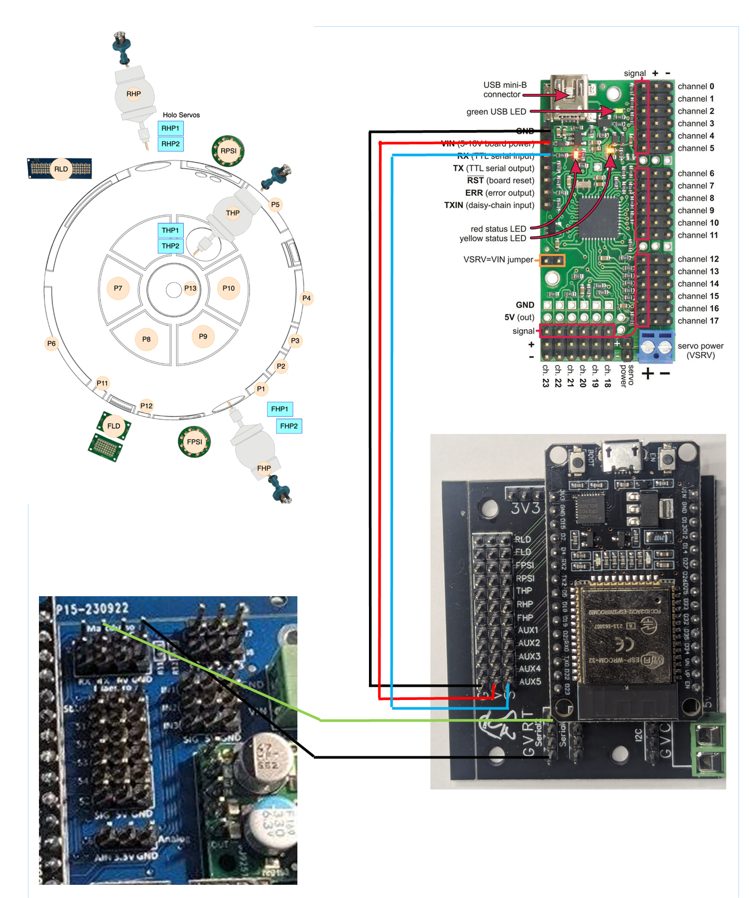

AstroPixelsPlus Commands
Wiring
ESP32 GPIO Pin Assignment

Serial Communication
- Serial2 (Marcduino): GPIO 16 (RX) / GPIO 17 (TX) @ 9600 baud
- Serial1 (Pololu Maestro): GPIO 18 (RX) / GPIO 19 (TX) @ 115200 baud
I2C Bus
- SDA: GPIO 21
- SCL: GPIO 22
LEDs / NeoPixels
- Front Logic: GPIO 15
- Rear Logic: GPIO 33
- Front PSI: GPIO 32
- Rear PSI: GPIO 23
- Front Holo: GPIO 25
- Rear Holo: GPIO 26
- Top Holo: GPIO 27
- Builtin LED (heartbeat): GPIO 2
Auxiliary Pins
- AUX1: GPIO 2
- AUX2: GPIO 4
- AUX3: GPIO 5
- AUX4: GPIO 18 (used by Maestro RX)
- AUX5: GPIO 19 (used by Maestro TX)
Note: Serial1 was previously used for a sound module but has been reassigned to the Pololu Maestro controller for servo control.
Panels (Serial2 / USB, prefix :)
Global Commands
| Command |
Description |
:CL00 | Close all panels (brownout risk if common power supply) |
:OP00 | Open all panels |
:OF00 | Flutter (shake) all panels |
:ST00 | Stop & disable ALL servos (limp, no torque) |
:SD<n> | Disable ONE servo (ex: :SD0, :SD4, :SD12) |
Direct Movement
| Command |
Description |
:SM<ch>,<dur>,<pos> | Direct movement (ex: :SM0,500,1500 = channel 0, 500ms, 1500µs) |
:SF<ch>$<easing> | Set servo easing method |
:SQ<ch>,<pos> | Immediate position without animation |
:SL<ch>,<min>,<max> | Set servo min/max limits |
Individual Groups (01 to 18 + 19/20)
| Open |
Close |
Flutter |
Description |
:OP01…:OP18 | :CL01…:CL18 | :OF01…:OF10 | Groups 1 to 18 |
:OP19 | :CL19 | — | Top panels (pie panels) |
:OP20 | :CL20 | — | Bottom panels (dome panels) |
Dynamic Group Animations
Replace $ with the group number in hexadecimal (ex: 1, 2, FF…)
| Command |
Description |
:OC$ | Open/Close group |
:OCL$ | Open/Close long |
:OCR$ | Open/Close repeated |
:OF$ | Flutter group |
:OW$ | Wave group |
:OWF$ | Fast wave group |
:OWC$ | Open/Close wave |
:OMA$ | Marching ants |
:OAP$ | Alternating |
:OD$ | Dance |
:OS$ | Shake |
:OP$ | Open dynamic group |
:CL$ | Close dynamic group |
Optional parameters (added after comma): <speedMin>,<speedMax>,<easingOn>,<easingOff>
Example: :OC1,10,50,1,2
Sequences (prefix :SE)
Control
| Command |
Description |
:SE00 | Stop current sequence |
Interpolated Sequences — recommended (speed=125ms, reliable)
These sequences guide servos step-by-step from the ESP32 (125ms/step interpolation).
This is the minimum reliable physical timing for dome panels.
| Command |
Equivalent |
Description |
:SE22 | SE02 | Wave |
:SE23 | SE03 | Smirk Wave (fast) |
:SE24 | SE04 | Open/Close Wave |
:SE25 | SE05 | Cantina beep (marching ants 15s) |
:SE26 | SE06 | Short Circuit (spark + failure 8s) |
:SE27 | SE07 | Full Cantina (dance 46s) |
:SE28 | SE08 | Leia Message (45s) — identical, no panel servos |
:SE29 | SE09 | Disco |
:SE30 | SE50 | Scream logics only — identical, no panels |
:SE31 | SE51 | Scream panels only |
:SE32 | SE52 | Slow wave |
:SE33 | SE53 | Smirk Wave |
:SE34 | SE54 | Open Wave |
:SE35 | SE55 | Marching Ants |
:SE36 | SE56 | Faint (open/close long) |
:SE37 | SE57 | Rhythmic |
:SE38 | SE58 | One By One (panel by panel) |
Original Sequences — reference (speed=0, Maestro handles movement)
Kept for reference. The Maestro controls the speed of its own servos.
Less reliable with current configuration (Maestro speed and acceleration = 0).
| Command |
Description |
:SE01 | Scream (panels + logics) |
:SE02 | Wave |
:SE03 | Smirk Wave (fast) |
:SE04 | Open/Close Wave |
:SE05 | Cantina beep (marching ants 15s) |
:SE06 | Short Circuit (spark + failure 8s) |
:SE07 | Full Cantina (dance 46s) |
:SE08 | Leia Message (45s) |
:SE09 | Disco |
:SE50 | Scream logics only (no panels) |
:SE51 | Scream panels only |
:SE52 | Slow wave |
:SE53 | Smirk Wave |
:SE54 | Open Wave |
:SE55 | Marching Ants |
:SE56 | Faint (open/close long) |
:SE57 | Rhythmic |
:SE58 | One By One (panel by panel) |
Note: At the end of each sequence, all panels are automatically closed via moveServosTo(ALL_DOME_PANELS_MASK, 125, 0.0), then servos are disabled after 1.5s (no brownout risk).
Holos (prefix *)
ON / OFF
| Command |
Description |
*ON01 | Front Holo ON |
*OF01 | Front Holo OFF |
*ON02 | Rear Holo ON |
*OF02 | Rear Holo OFF |
*ON03 | Top Holo ON |
*OF03 | Top Holo OFF |
*ST00 | Reset all holos |
Movements
| Command |
Description |
*RD01 | Random movement Front (one-shot) |
*RD02 | Random movement Rear (one-shot) |
*RD03 | Random movement Top (one-shot) |
*HW01 | Wag (left/right) Front |
*HW02 | Wag Rear |
*HW03 | Wag Top |
*HN01 | Nod (up/down) Front |
*HN02 | Nod Rear |
*HN03 | Nod Top |
R2 Alive — All-in-one
Simultaneously activates continuous random movements AND blue↔white LEDs with smooth fade (1.5s fade in/out, 5–10s on, 3–9s off). Each holo is independent and offset.
| Command |
Description |
*HV01 | Start Slow — movements 8–15s + LEDs |
*HV02 | Start Medium — movements 3–8s + LEDs |
*HV03 | Start Fast — movements 1–4s + LEDs |
*HV00 | Stop — return to center + LEDs off |
HoloAlive — Continuous Movement (fine control)
Animates the 3 holos independently to random positions in a loop. Each holo has its own offset timer (organic effect). LEDs not affected.
| Command |
Description |
*HA01 | Start Slow mode (8–15s between movements) |
*HA02 | Start Medium mode (3–8s between movements) |
*HA03 | Start Fast mode (1–4s between movements) |
*HZ00 | Stop — all holos return to center |
Light Effects
| Command |
Description |
*HPS301 | Pulse Front |
*HPS302 | Pulse Rear |
*HPS303 | Pulse Top |
*HPS601 | Rainbow Front |
*HPS602 | Rainbow Rear |
*HPS603 | Rainbow Top |
Fixed Positions (xx = 01 Front / 02 Rear / 03 Top)
| Command |
Description |
*HP0xx | Down |
*HP1xx | Center |
*HP2xx | Up |
*HP3xx | Left |
*HP4xx | Up-left |
*HP5xx | Down-left |
*HP6xx | Right |
*HP7xx | Up-right |
*HP8xx | Down-right |
Examples: *HP001 = Front down, *HP102 = Rear center, *HP203 = Top up
Radar Eye
| Command |
Description |
*HRS3 | Pulse (color) |
*HRSR | Pulse red |
*HRS6 | Rainbow |
*HRS4 | Color cycle |
*OF04 | Radar Eye OFF |
Logics & PSI (prefix @)
Sequences (T = Logic Display, P = PSI)
0 = all | 1 = Front | 2 = Rear
| N° |
Sequence |
| 1 | Normal |
| 2 | Flash |
| 3 | Alarm |
| 4 | Failure |
| 5 | Scream |
| 6 | Leia |
| 11 | March |
| Command |
Description |
@0T<n> | All logics: sequence n |
@1T<n> | Front Logic Display: sequence n |
@2T<n> | Rear Logic Display: sequence n |
@0P<n> | All PSI: sequence n |
@1P<n> | Front PSI: sequence n |
@2P<n> | Rear PSI: sequence n |
Examples: @0T1 = all logics normal, @1T5 = Front scream, @2P6 = Rear PSI Leia
Holos via Marcduino
| Command |
Description |
@6T1 | Front Holo ON |
@6D | Front Holo OFF |
@7T1 | Top Holo ON |
@7D | Top Holo OFF |
@8T1 | Rear Holo ON |
@8D | Rear Holo OFF |
@HP<cmd> | Direct holo command |
System Commands
| Command |
Description |
~RT<cmd> | Direct Reeltwo command |
@AP<cmd> | Direct MD command to AstroPixels |
#APWIFI | Toggle WiFi ON/OFF (WiFi currently disabled) |
#APZERO | Clear all NVS preferences (factory reset) |
#APRESTART | Restart ESP32 |
Prefix Summary
| Prefix |
Destination |
: | Panels / Sequences / Servo |
* | Holos (Marcduino standard) |
@ | Logics / PSI / Alternative holos |
~RT | Reeltwo direct |
@AP | AstroPixels direct |
#AP | AstroPixelsPlus system commands |
$ | Music sequences (ex: $815 Harlem Shake) |
Pololu Maestro 24-channel Configuration
Global Settings (Serial Settings)
| Parameter |
Value |
| Serial mode | UART, fixed baud rate |
| Baud rate | 115200 |
| Device ID | 1 |
| CRC disabled | X |
Servo Speed and Acceleration
Maestro units are: Speed in 0.25 µs / 10 ms, Acceleration in 0.25 µs / 10 ms².
Typical panel movement is ~850 µs (ex: 1350 → 2200 µs).
| Speed |
Actual speed |
Time for 850 µs |
| 0 | unlimited (current) | ~100–200 ms physical |
| 40 | 1 µs/ms | ~850 ms |
| 80 | 2.5 µs/ms | ~420 ms |
| 120 | 3 µs/ms | ~280 ms |
Recommended values to test — channels 0–12 (panels):
- Speed: 80 → ~420 ms, natural and reliable
- Acceleration: 5 → smooth ramp, avoids mechanical shocks and current spikes
Channels 13–18 (holo servos): leave Speed=0 (unlimited) for brisk movement.
Channel Mapping
| Channel |
Servo |
Type |
| 0 | Door 4 | SMALL_PANEL |
| 1 | Door 3 | SMALL_PANEL |
| 2 | Door 2 | SMALL_PANEL |
| 3 | Door 1 | MEDIUM_PANEL |
| 4 | Door 5 | MEDIUM_PANEL |
| 5 | Door 9 | BIG_PANEL |
| 6 | Pie 1 | PIE_PANEL |
| 7 | Pie 2 | PIE_PANEL |
| 8 | Pie 3 | PIE_PANEL |
| 9 | Pie 4 | PIE_PANEL |
| 10 | Mini 2 | MINI_PANEL |
| 11 | Mini PSI | MINI_PANEL |
| 12 | Top Center | TOP_PIE_PANEL |
| 13 | Front Holo H | HOLO_HSERVO |
| 14 | Front Holo V | HOLO_VSERVO |
| 15 | Top Holo H | HOLO_HSERVO |
| 16 | Top Holo V | HOLO_VSERVO |
| 17 | Rear Holo H | HOLO_HSERVO |
| 18 | Rear Holo V | HOLO_VSERVO |
| 19–23 | — unused — | — |
- Channels 0–12 (panels): Speed=80, Acceleration=5 recommended
- Channels 13–18 (holo servos): Speed=0 (unlimited) for brisk movement
- Channels 19–23: free / unused